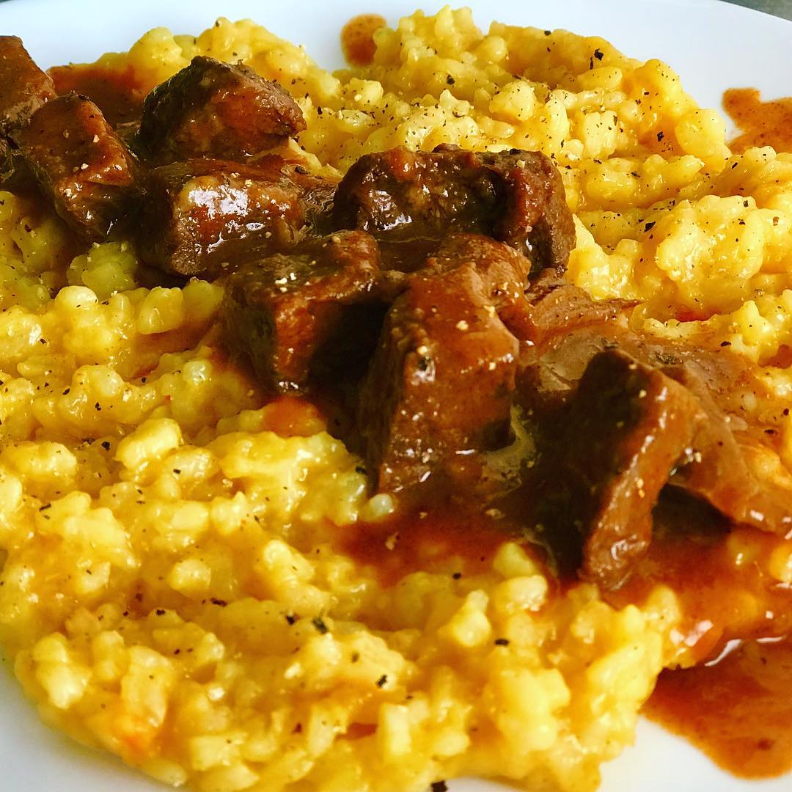

Jelenie ragú podľa @ronnie_the_kitchen_diva — Normy Jedál
Saffron risotto with deer ragù 🦌 Safranove rizoto s jelenim ragu 🤤 Dakujem @primafresh za inspiraciu, pozmenila som iba masko, kedze mame zveriny aj na rozdavanie 🤷🏻♀️ #primafresh #ohdeer #deerragu #saffronrisotto #safranoverizoto #jelenieragu #divina #zverina #ilivetoeat #nikuskinavareska #milujemjedlo #jedlomilujemna #mykindofart #mykitchen #wherethemagichappens #sunday #primafreshzima2018 #milujemedobrejidlo